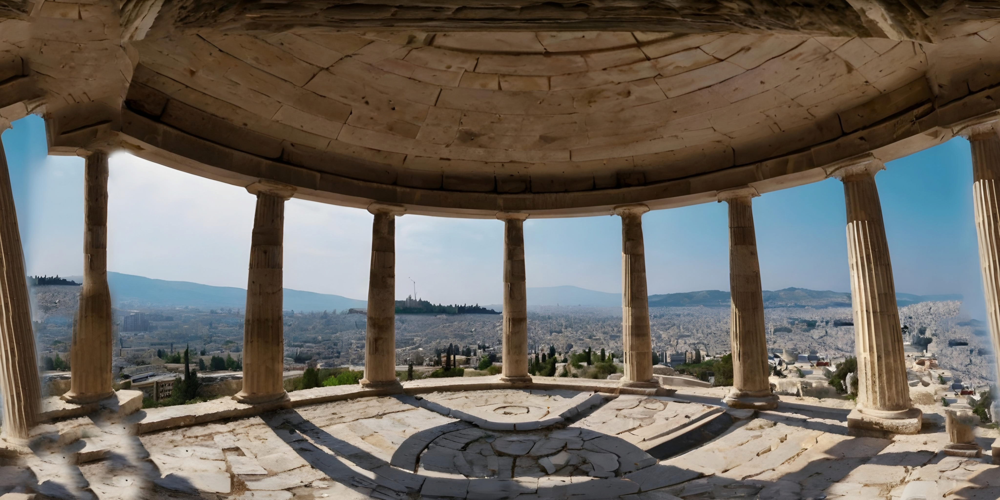
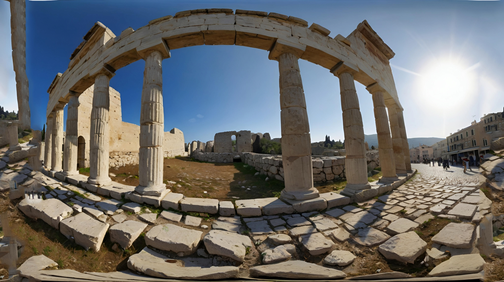
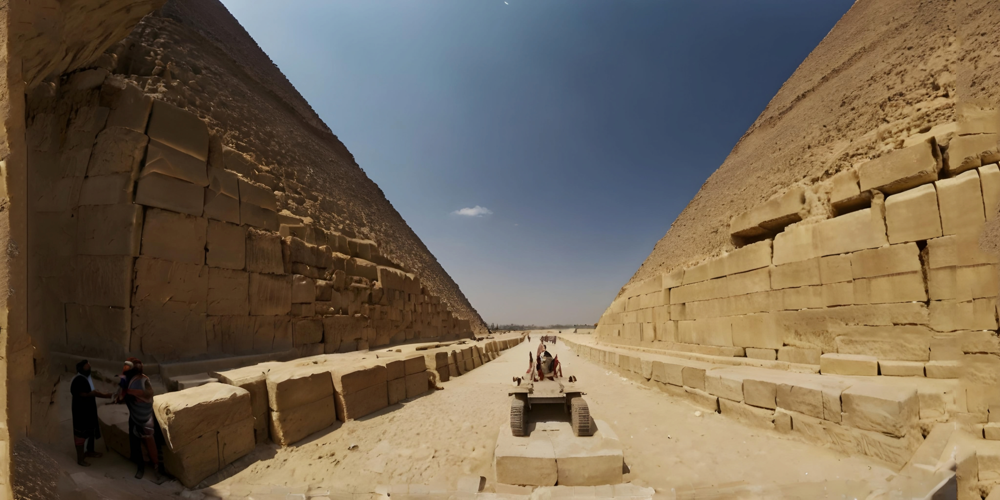
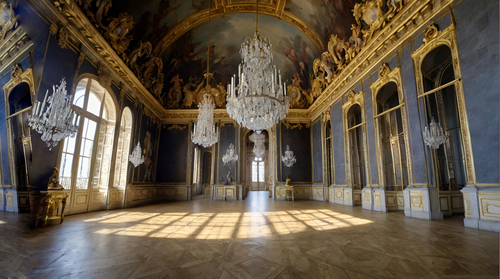
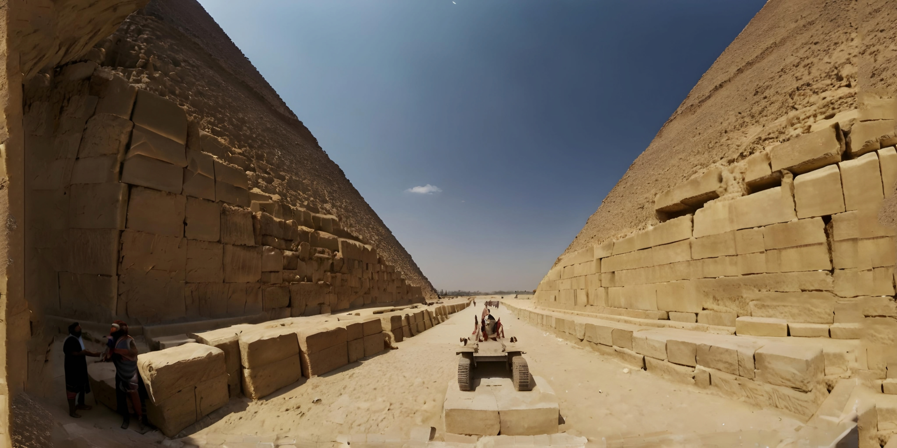
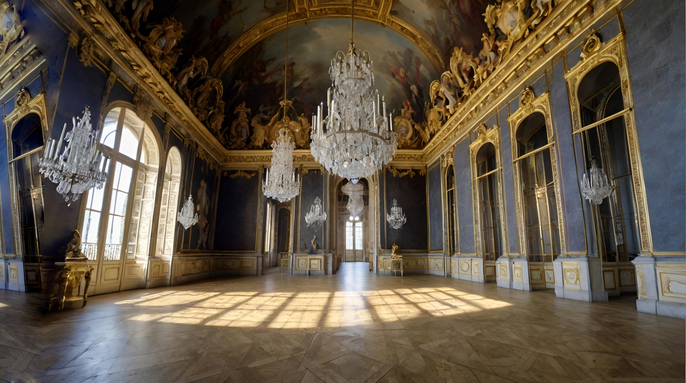
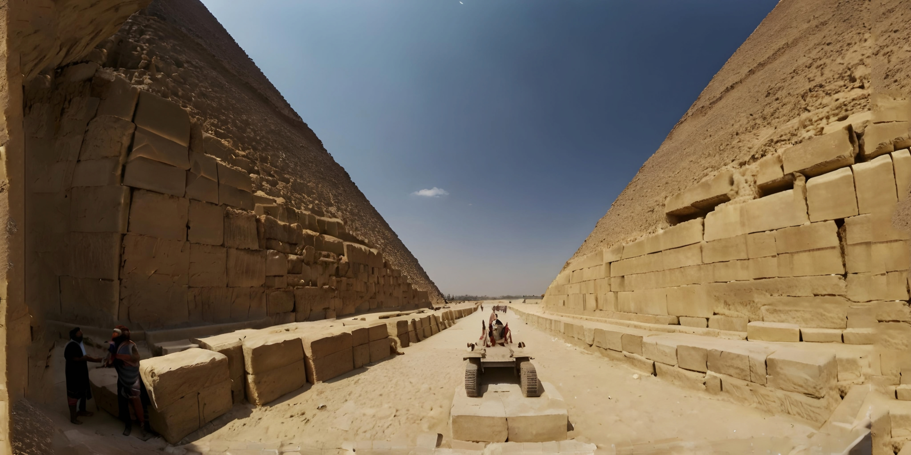
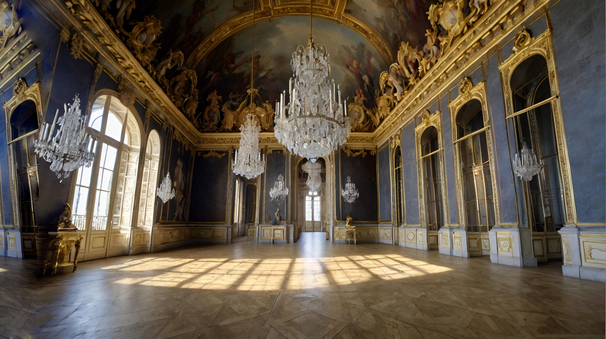

Atenas Grécia
Stonehenge Inglaterra
Taj Mahal Índia
Pirâmides Egito
Palácio de Versalhes França
Troca Automática
 
 
Aviso: As imagens são meramente representações dos locais e não são imagens reais.
 


